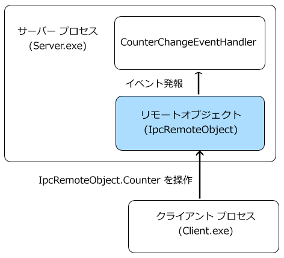

IPC プロトコルを使用して、プロセス間でメッセージを送信するチャネル実装を提供します。
まずはシンプルにコンソールで IPCチャネル を作ってみましょう。
こんな感じに、クライアント側からリモートオブジェクトのプロパティ Counter を操作すると、サーバー側のイベントが発報されてそのときの Counter の値をサーバー側で画面へ表示する、というようなプログラムにしてみます。
環境：

[図： プログラム構成]
(*) 「System.Runtime.Remoting」の参照追加を行う必要があります。
[プログラムソース "server.cs"]
using System;
using System.Collections.Generic;
using System.Linq;
using System.Text;
using System.Threading;
using System.Runtime.Remoting;
using System.Runtime.Remoting.Channels;
using System.Runtime.Remoting.Channels.Ipc;
using IpcSample;
namespace Server
{
class Program
{
private static IpcServer _ipcServer;
static void Main(string[] args)
{
_ipcServer = new IpcServer();
_ipcServer.remoteObject.counterChangeEvent += CounterChangeEventHandler;
// メイン処理
// 終了待ち
Console.Write("HIT [Enter] KEY !! ");
Console.ReadLine();
}
private static void CounterChangeEventHandler(object sender, EventArgs e)
{
Console.WriteLine("[CounterChangeEventHandler] Counter = " + _ipcServer.remoteObject.Counter);
}
}
class IpcServer
{
public IpcRemoteObject remoteObject { private set; get; }
/// <summary>
/// コンストラクタ
/// </summary>
public IpcServer()
{
// サーバーチャンネルの作成
IpcServerChannel channel = new IpcServerChannel("IpcSample");
// チャンネルを登録
ChannelServices.RegisterChannel(channel, true);
// リモートオブジェクトを生成して公開
remoteObject = new IpcRemoteObject();
RemotingServices.Marshal(remoteObject, "test", typeof(IpcRemoteObject));
}
}
}
(*) 「System.Runtime.Remoting」の参照追加を行う必要があります。
[プログラムソース "client.cs"]
using System;
using System.Collections.Generic;
using System.Linq;
using System.Text;
using System.Threading;
using System.Runtime.Remoting;
using System.Runtime.Remoting.Channels;
using System.Runtime.Remoting.Channels.Ipc;
using IpcSample;
namespace Client
{
class Program
{
private static IpcClient _ipcClient;
static void Main(string[] args)
{
System.Threading.Thread.Sleep(2000);
_ipcClient = new IpcClient();
// メイン処理
ThreadPool.QueueUserWorkItem(new WaitCallback(MethodTest));
// 終了待ち
Console.Write("HIT [Enter] KEY !! ");
Console.ReadLine();
}
private static void MethodTest(Object obj)
{
for ( int i=0; i<3000; ++i)
{
Thread.Sleep(1000);
_ipcClient.remoteObject.Counter++;
Console.WriteLine("Counter = "+_ipcClient.remoteObject.Counter);
}
}
}
class IpcClient
{
public IpcRemoteObject remoteObject { private set; get; }
public IpcClient()
{
// クライアントチャネルの作成
IpcClientChannel channel = new IpcClientChannel();
// チャンネルを登録
ChannelServices.RegisterChannel(channel, true);
// リモートオブジェクトを取得
remoteObject = Activator.GetObject(typeof(IpcRemoteObject), "ipc://IpcSample/test") as IpcRemoteObject;
}
}
}
using System;
using System.Runtime.Remoting.Lifetime;
namespace IpcSample
{
public class IpcRemoteObject : MarshalByRefObject
{
public delegate void CounterChangeEventHandler(object sender, EventArgs e);
public event CounterChangeEventHandler counterChangeEvent;
private int _counter;
public int Counter {
set {
_counter = value;
if ( counterChangeEvent != null)
{
counterChangeEvent(this, new EventArgs());
}
}
get {
return _counter;
}
}
public override Object InitializeLifetimeService()
{
// このオブジェクトのリース期限を無制限にします。
ILease lease = (ILease)base.InitializeLifetimeService();
if (lease.CurrentState == LeaseState.Initial)
{
lease.InitialLeaseTime = TimeSpan.Zero; // リース期限を無制限にします
//lease.InitialLeaseTime = TimeSpan.FromSeconds(15); // リース期限を15秒にします
}
return lease;
}
}
}
サンプルダウンロード は こちら。
本ページの情報は、特記無い限り下記 MIT ライセンスで提供されます。
| 2023-04-19 | - | ページデザイン更新 |
| 2015-12-06 | - | 新規作成 |